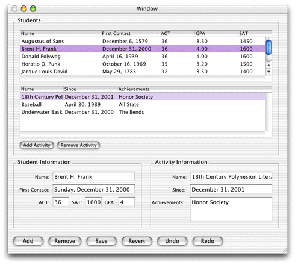
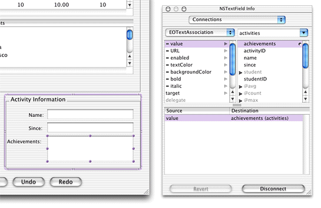

To express the relationships in your EOModel, you use a master-detail interface. This interface includes a master table that holds records for the source of the relationship and a detail table that holds records for the destination. As individual records in the master table are selected, the contents of the detail table change to show the records that correspond to the selection in the master table.
Before adding a master-detail interface, delete the table view from the nib file's main window and delete the Student EODisplayGroup and the EOEditingContext object from the nib file window.
You create a master-detail interface by simply dragging a
relationship from EOModeler into a nib file window. Drag the Student
entity's activities relationship
from EOModeler onto the main window in Interface Builder. This creates
a master-detail relationship. The icon you drag is found under the
Student entity in the entity list pane of EOModeler. You may have
to click the plus icon to show the relationship.
Figure
6-16 The activities relationship
in the Student entity
Reconnect the Add and Remove buttons to the Student EODisplayGroup. Add two buttons for detail part of the relationship to add and remove activities. Connect them to the activities display group. Add the formatters for the columns as you did earlier.
Test the master-detail interface by choosing Test Interface from the File menu. Figure 6-17 shows the master-detail interface.
Figure 6-17 A master-detail interface
![[image: ../Art/masterdetailnib.gif]](../Art/masterdetailnib.gif)
The master-detail interface you just created can be improved. Although you can add new records by entering text directly in the table columns, it would be nice to provide text fields for doing the same thing. Also, you should take advantage of more built-in features of the technology, such as reversion, undo, and redo.
It's easy to add widgets in Interface Builder. Simply drag widgets from the Interface Builder palette onto the window. Figure 6-18 illustrates the complete widget set of text fields, text areas, and buttons for the master-detail interface.
Figure 6-18 Complete widget set for the master-detail interface
Once you drag a widget into a window, you must connect it
to the application. Consider the Achievements text field for the
Activities entity. Once it's placed in the interface, Control-drag
from the text field to the Activities entity in nib file window.
In the Info window, choose EOTextAssociation from the pop-up menu
and double-click "achievements" in the scrolling list, as shown
in Figure 6-19. This
creates an association between the widget and the attribute in the
entity. So, when you select a record, the value of the achievements attribute
for that record is also displayed in the text field. This also allows
you to edit the value of the attribute with which a text field is
associated.
Figure 6-19 Connect widgets with associations
Associate each widget appropriately. Save the nib file.